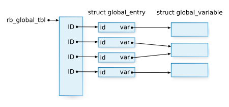
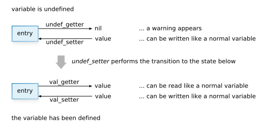

Ruby Hacking Guide
Translated by Vincent ISAMBART
Chapter 6: Variables and constants
Outline of this chapter
Ruby variables
In Ruby there are quite a lot of different types of variables and constants. Let’s line them up, starting from the largest scope.
- Global variables
- Constants
- Class variables
- Instance variables
- Local variables
Instance variables were already explained in chapter 2 “Objects”. In this chapter we’ll talk about:
- Global variables
- Class variables
- Constants
We will talk about local variables in the third part of the book.
API for variables
The object of this chapter’s analysis is variable.c. Let’s first
look at the available API.
VALUE rb_iv_get(VALUE obj, char *name) VALUE rb_ivar_get(VALUE obj, ID name) VALUE rb_iv_set(VALUE obj, char *name, VALUE val) VALUE rb_ivar_set(VALUE obj, ID name, VALUE val)
We’ve already spoken about those functions, but must mention them again
as they are in variable.c. They are of course used for accessing instance
variables.
VALUE rb_cv_get(VALUE klass, char *name) VALUE rb_cvar_get(VALUE klass, ID name) VALUE rb_cv_set(VALUE klass, char *name, VALUE val) VALUE rb_cvar_set(VALUE klass, ID name, VALUE val)
These functions are the API for accessing class variables. Class
variables belong directly to classes so the functions take a class as
parameter. There are in two groups, depending if their name starts
with rb_Xv or rb_Xvar. The difference lies in the type of the
variable “name”. The ones with a shorter name are generally easier to
use because they take a char*. The ones with a longer name are more
for internal use as they take a ID.
VALUE rb_const_get(VALUE klass, ID name) VALUE rb_const_get_at(VALUE klass, ID name) VALUE rb_const_set(VALUE klass, ID name, VALUE val)
These functions are for accessing constants. Constants also belong to
classes so they take classes as parameter. rb_const_get() follows
the superclass chain, whereas rb_const_get_at() does not (it just
looks in klass).
struct global_entry *rb_global_entry(ID name) VALUE rb_gv_get(char *name) VALUE rb_gvar_get(struct global_entry *ent) VALUE rb_gv_set(char *name, VALUE val) VALUE rb_gvar_set(struct global_entry *ent, VALUE val)
These last functions are for accessing global variables. They are a little different from the others due to the use of `struct global_entry`. We’ll explain this while describing the implementation.
Important points
The most important topic of this chapter is “Where and how are variables stored?”, in other words: data structures.
The second most important matter is how we search for the values. The scopes of Ruby variables and constants are quite complicated because variables and constants are sometimes inherited, sometimes looked for outside of the local scope… To have a better understanding, you should first try to guess from the behavior how it could be implemented, then compare that with what is really done.
Class variables
Class variables are variables that belong to classes. In Java or C++ they are called static variables. They can be accessed from both the class or its instances. But “from an instance” or “from the class” is information only available in the evaluator, and we do not have one for the moment. So from the C level it’s like having no access range. We’ll just focus on the way these variables are stored.
Reading
The functions to get a class variable are rb_cvar_get() and
rb_cv_get(). The function with the longer name takes ID as
parameter and the one with the shorter one takes char*. Because the
one taking an ID seems closer to the internals, we’ll look at it.
▼ rb_cvar_get()
1508 VALUE 1509 rb_cvar_get(klass, id) 1510 VALUE klass; 1511 ID id; 1512 { 1513 VALUE value; 1514 VALUE tmp; 1515 1516 tmp = klass; 1517 while (tmp) { 1518 if (RCLASS→iv_tbl) { 1519 if (st_lookup(RCLASS→iv_tbl,id,&value)) { 1520 if (RTEST) { 1521 cvar_override_check(id, tmp); 1522 } 1523 return value; 1524 } 1525 } 1526 tmp = RCLASS→super; 1527 } 1528 1529 rb_name_error(id,“uninitialized class variable %s in %s”, 1530 rb_id2name(id), rb_class2name(klass)); 1531 return Qnil; /* not reached */ 1532 }(variable.c)
This function reads a class variable in klass.
Error management functions like rb_raise() can be simply ignored
like I said before. The rb_name_error() that appears this time is a
function for raising an exception, so it can be ignored for the same
reasons. In ruby, you can assume that all functions ending with
_error raise an exception.
After removing all this, we can see that while following the klass‘s
superclass chain we only search in iv_tbl. At this point you should
say "What? iv_tbl is the instance variables table, isn’t it?" As a
matter of fact, class variables are stored in the instance variable
table.
We can do this because when creating IDs, the whole name of the
variables is taken into account, including the prefix: rb_intern()
will return different IDs for “@var” and “@@var”. At the Ruby
level, the variable type is determined only by the prefix so there’s
no way to access a class variable called @var from Ruby.
Constants
It’s a little abrupt but I’d like you to remember the members of
struct RClass. If we exclude the basic member, struct RClass
contains:
VALUE superstruct st_table *iv_tblstruct st_table *m_tbl
Then, considering that:
- constants belong to a class
- we can’t see any table dedicated to constants in
struct RClass - class variables and instance variables are both in
iv_tbl
Could it mean that the constants are also…
Assignment
rb_const_set() is a function to set the value of constants: it sets
the constant id in the class klass to the value val.
▼ rb_const_set()
1377 void 1378 rb_const_set(klass, id, val) 1379 VALUE klass; 1380 ID id; 1381 VALUE val; 1382 { 1383 mod_av_set(klass, id, val, Qtrue); 1384 }(variable.c)
mod_av_set() does all the hard work:
▼ mod_av_set()
1352 static void 1353 mod_av_set(klass, id, val, isconst) 1354 VALUE klass; 1355 ID id; 1356 VALUE val; 1357 int isconst; 1358 { 1359 char *dest = isconst ? “constant” : “class variable”; 1360 1361 if (!OBJ_TAINTED(klass) && rb_safe_level() >= 4) 1362 rb_raise(rb_eSecurityError, “Insecure: can’t set %s”, dest); 1363 if (OBJ_FROZEN(klass)) rb_error_frozen(“class/module”); 1364 if (!RCLASS→iv_tbl) { 1365 RCLASS→iv_tbl = st_init_numtable(); 1366 } 1367 else if (isconst) { 1368 if (st_lookup(RCLASS→iv_tbl, id, 0) || 1369 (klass == rb_cObject && st_lookup(rb_class_tbl, id, 0))) { 1370 rb_warn(“already initialized %s %s”, dest, rb_id2name(id)); 1371 } 1372 } 1373 1374 st_insert(RCLASS→iv_tbl, id, val); 1375 }(variable.c)
You can this time again ignore the warning checks (rb_raise(),
rb_error_frozen() and rb_warn()). Here’s what’s left:
▼ mod_av_set() (only the important part)
if (!RCLASS→iv_tbl) {
RCLASS→iv_tbl = st_init_numtable();
}
st_insert(RCLASS→iv_tbl, id, val);
We’re now sure constants also reside in the instance table. It means
in the iv_tbl of struct RClass, the following are mixed together:
- the class’s own instance variables
- class variables
- constants
Reading
We now know how the constants are stored. We’ll now check how they really work.
rb_const_get()
We’ll now look at rconst_get(), the function to read a
constant. This functions returns the constant referred to by id from the class
klass.
▼ rb_const_get()
1156 VALUE 1157 rb_const_get(klass, id) 1158 VALUE klass; 1159 ID id; 1160 { 1161 VALUE value, tmp; 1162 int mod_retry = 0; 1163 1164 tmp = klass; 1165 retry: 1166 while (tmp) { 1167 if (RCLASS→iv_tbl && st_lookup(RCLASS→iv_tbl,id,&value)) { 1168 return value; 1169 } 1170 if (tmp == rb_cObject && top_const_get(id, &value)) return value; 1171 tmp = RCLASS→super; 1172 } 1173 if (!mod_retry && BUILTIN_TYPE(klass) == T_MODULE) { 1174 mod_retry = 1; 1175 tmp = rb_cObject; 1176 goto retry; 1177 } 1178 1179 /* Uninitialized constant / 1180 if (klass && klass != rb_cObject) { 1181 rb_name_error(id, “uninitialized constant %s at %s”, 1182 rb_id2name(id), 1183 RSTRING)→ptr); 1184 } 1185 else { / global_uninitialized / 1186 rb_name_error(id, “uninitialized constant %s”,rb_id2name(id)); 1187 } 1188 return Qnil; / not reached */ 1189 }(variable.c)
There’s a lot of code in the way. First, we should at least remove the
rb_name_error() in the second half. In the middle, what’s around
mod_entry seems to be a special handling for modules. Let’s also
remove that for the time being. The function gets reduced to this:
▼ rb_const_get (simplified)
VALUE rb_const_get(klass, id) VALUE klass; ID id; { VALUE value, tmp; tmp = klass; while (tmp) { if (RCLASS→iv_tbl && st_lookup(RCLASS→iv_tbl,id,&value)) { return value; } if (tmp == rb_cObject && top_const_get(id, &value)) return value; tmp = RCLASS→super; }}
Now it should be pretty easy to understand. The function searches for the
constant in iv_tbl while climbing klass’s superclass chain. That
means:
class A Const = "ok" end class B < A p(Const) # can be accessed end
The only problem remaining is top_const_get(). This function is only
called for rb_cObject so top must mean “top-level”. If you don’t
remember, at the top-level, the class is Object. This means the same
as “in the class statement defining C, the class becomes C”,
meaning that “the top-level’s class is Object”.
# the class of the top-level is Object
class A
# the class is A
class B
# the class is B
end
end
So top_const_get() probably does something specific to the top
level.
top_const_get()
Let’s look at this top_const_get function. It looks up the id
constant writes the value in klassp and returns.
▼ top_const_get()
1102 static int 1103 top_const_get(id, klassp) 1104 ID id; 1105 VALUE klassp; 1106 { 1107 / pre-defined class / 1108 if (st_lookup(rb_class_tbl, id, klassp)) return Qtrue; 1109 1110 / autoload */ 1111 if (autoload_tbl && st_lookup(autoload_tbl, id, 0)) { 1112 rb_autoload_load(id); 1113 *klassp = rb_const_get(rb_cObject, id); 1114 return Qtrue; 1115 } 1116 return Qfalse; 1117 }(variable.c)
rb_class_tbl was already mentioned in chapter 4 “Classes and
modules”. It’s the table for storing the classes defined at the
top-level. Built-in classes like String or Array have for example
an entry in it. That’s why we should not forget to search in this
table when looking for top-level constants.
The next block is related to autoloading. This allows us to automatically load a library when accessing a top-level constant for the first time. This can be used like this:
autoload(:VeryBigClass, "verybigclass") # VeryBigClass is defined in it
After this, when VeryBigClass is accessed for the first time, the
verybigclass library is loaded (with require). As long as
VeryBigClass is defined in the library, execution can continue smoothly. It’s
an efficient approach, when a library is too big and a lot of time is spent on loading.
This autoload is processed by rb_autoload_xxxx(). We won’t discuss
autoload further in this chapter because there will probably be a big
change in how it works soon (The way autoload works did change in
1.8: autoloaded constants do not need to be defined at top-level
anymore).
Other classes?
But where did the code for looking up constants in other classes end up? After all, constants are first looked up in the outside classes, then in the superclasses.
In fact, we do not yet have enough knowledge to look at that. The
outside classes change depending on the location in the program. In
other words it depends of the program context. So we need first to
understand how the internal state of the
evaluator is handled. Specifically, this search in other classes is done in the
ev_const_get() function of eval.c. We’ll look at it and finish
with the constants in the third part of the book.
Global variables
General remarks
Global variables can be accessed from anywhere. Or put the other way around, there is no need to restrict access to them. Because they are not attached to any context, the table only has to be at one place, and there’s no need to do any check. Therefore implementation is very simple.
But there is still quite a lot of code. The reason for this is that global variables are quite different from normal variables. Functions like the following are only available for global variables:
- you can “hook” access of global variables
- you can alias them with
alias
Let’s explain this simply.
Aliases of variables
alias $newname $oldname
After this, you can use $newname instead of $oldname. alias for
variables is mainly a counter-measure for “symbol variables”. “symbol
variables” are variables inherited from Perl like $= or $0. $=
decides if during string comparison upper and lower case letters
should be differentiated. $0 shows the name of the main Ruby
program. There are some other symbol variables but anyway as their
name is only one character long, they are difficult to remember for
people who don’t know Perl. So, aliases were created to make them a little
easier to understand.
That said, currently symbol variables are not recommended, and are
moved one by one in singleton methods of suitable modules. The current
school of thought is that $= and others will be abolished in 2.0.
Hooks
You can “hook” read and write of global variables.
Hooks can be also be set at the Ruby level, but I was thinking: why not
instead look at C level special variables for system use like
$KCODE? $KCODE is the variable containing the encoding the
interpreter currently uses to handle strings. It can only be set to
special values like "EUC" or "UTF8". But this is too bothersome so
it can also be set it to "e" or "u".
p($KCODE) # "NONE" (default) $KCODE = "e" p($KCODE) # "EUC" $KCODE = "u" p($KCODE) # "UTF8"
Knowing that you can hook assignment of global variables, you should
understand easily how this can be done. By the way, $KCODE’s K comes
from “kanji” (the name of Chinese characters in Japanese).
You might say that even with alias or hooks,
global variables just aren’t used much, so it’s functionality that doesn’t
really mater. It’s adequate not to talk much about unused
functions, and I need some pages for the analysis of the parser and
evaluator. That’s why I’ll proceed with the explanation below throwing
away what’s not really important.
Data structure
When we were looking at how variables work, I said that the way they are stored is important. That’s why I’d like you to firmly grasp the structure used by global variables.
▼ Data structure for global variables
21 static st_table *rb_global_tbl;
334 struct global_entry {
335 struct global_variable *var;
336 ID id;
337 };
324 struct global_variable {
325 int counter; /* reference counter */
326 void data; / value of the variable */
327 VALUE (getter)(); / function to get the variable */
328 void (setter)(); / function to set the variable */
329 void (marker)(); / function to mark the variable */
330 int block_trace;
331 struct trace_var *trace;
332 };
(variable.c)
rb_global_tbl is the main table. All global variables are stored in
this table. The keys of this table are of course variable names
(ID). A value is expressed by a struct global_entry and a `struct
global_variable` (figure 1).

Figure 1: Global variables table at execution time
The structure representing the variables is split in two to be able to
create aliases. When an alias is established, two global_entrys
point to the same struct global_variable.
It’s at this time that the reference counter (the counter member of
struct global_variable) is necessary. I explained the general idea of
a reference counter in the previous section “Garbage
collection”. Reviewing it briefly, when a new reference to the
structure is made, the counter in incremented by 1. When the reference
is not used anymore, the counter is decreased by 1. When the counter
reaches 0, the structure is no longer useful so free() can be
called.
When hooks are set at the Ruby level, a list of struct trace_vars is
stored in the trace member of struct global_variable, but I won’t
talk about it, and omit struct trace_var.
Reading
You can have a general understanding of global variables just by looking at how
they are read. The functions for reading them are rb_gv_get() and
rb_gvar_get().
▼ rb_gv_get() rb_gvar_get()
716 VALUE 717 rb_gv_get(name) 718 const char *name; 719 { 720 struct global_entry *entry; 721 722 entry = rb_global_entry(global_id(name)); 723 return rb_gvar_get(entry); 724 } 649 VALUE 650 rb_gvar_get(entry) 651 struct global_entry *entry; 652 { 653 struct global_variable *var = entry→var; 654 return (*var→getter)(entry→id, var→data, var); 655 }(variable.c)
A substantial part of the content seems to turn around the
rb_global_entry() function, but that does not prevent us
understanding what’s going on. global_id is a function that converts a
char* to ID and checks if it’s the ID of a global
variable. (*var->getter)(...) is of course a function call using the
function pointer var->getter. If p is a function pointer,
(*p)(arg) calls the function.
But the main part is still rb_global_entry().
▼ rb_global_entry()
351 struct global_entry*
352 rb_global_entry(id)
353 ID id;
354 {
355 struct global_entry *entry;
356
357 if (!st_lookup(rb_global_tbl, id, &entry)) {
358 struct global_variable *var;
359 entry = ALLOC;
360 st_add_direct(rb_global_tbl, id, entry);
361 var = ALLOC;
362 entry→id = id;
363 entry→var = var;
364 var→counter = 1;
365 var→data = 0;
366 var→getter = undef_getter;
367 var→setter = undef_setter;
368 var→marker = undef_marker;
369
370 var→block_trace = 0;
371 var→trace = 0;
372 }
373 return entry;
374 }
(variable.c)
The main treatment is only done by the st_lookup() at the beginning.
What’s done afterwards is just creating (and storing) a new entry. As, when
accessing a non existing global variable, an entry is automatically
created, rb_global_entry() will never return NULL.
This was mainly done for speed. When the parser finds a global
variable, it gets the corresponding struct global_entry. When
reading the value of the variable, the parser just has to get the
value from the entry (using rb_gv_get()), and has no need to do any
check.
Let’s now continue a little with the code that follows. var->getter
and others are set to undef_xxxx. undef means that the global
setter/getter/marker for the variable are currently undefined.
undef_getter() just shows a warning and returns nil, as even
undefined global variables can be read. undef_setter() is quite
interesting so let’s look at it.
▼ undef_setter()
385 static void 386 undef_setter(val, id, data, var) 387 VALUE val; 388 ID id; 389 void data; 390 struct global_variable *var; 391 { 392 var→getter = val_getter; 393 var→setter = val_setter; 394 var→marker = val_marker; 395 396 var→data = (void)val; 397 }(variable.c)
val_getter() takes the value from entry->data and returns
it. val_getter() just puts a value in entry->data. Setting
handlers this way allows us not to need special handling for undefined
variables (figure 2). Skillfully done, isn’t it?

Figure 2: Setting and consultation of global variables